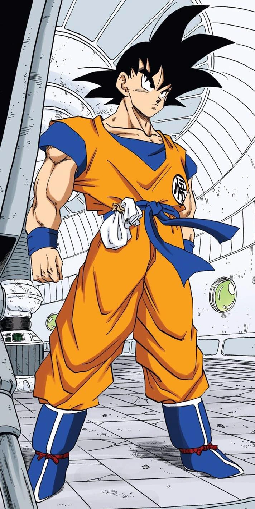

Son Goku (孫そん悟ご空くう Son Gokū), born Kakarot (カカロット Kakarotto), is a Saiyan raised on Earth and the main protagonist of the Dragon Ball series.
He is the second born, as well as youngest son and child of Bardock and Gine, the husband of Chi-Chi, and the father of Gohan and Goten.
Originally sent to Earth by his parents as an infant, Kakarot was adopted by Grandpa Gohan and renamed Son Goku.
A head injury at an early age altered Goku's memory, ridding him of his initial destructive nature and allowing him to grow up to become one of Earth's greatest defenders.
Goku constantly strives and trains to be the greatest warrior possible, which has kept the Earth and the universe safe from destruction multiple times.
Originally as an infant Saiyan, Goku was very timid, constantly crying for attention.
Goku was then programmed with intense hostility to carry out his mission of eradicating all sentient life on Earth.
When found by Grandpa Gohan, he was unruly, savage, and aggressive, wanting nothing to do with the elder.
However, after the head injury that caused him to lose his instinctual aggression, Goku became well-known for the energetic, kindhearted, pure heart and caring personality traits he inherited from his mother Gine.
He was taught to be compassionate and respectful to others by Grandpa Gohan.
He takes most situations in stride; he rarely lets things get him worked up; he quickly got over losing his tail each time.
He is however not without fear.
Goku is shown to be submissive to overbearing women like Bulma and Chi-Chi, even to the point of Master Roshi jokingly declaring that for all his immense power, he is terrified of his wife.
In the anime, he also has aichmophobia, a crippling fear of needles.
He is not beyond feeling sorrow, most noticeably seen from the loss of his grandfather.
In the Dragon Ball Super manga, he is not above feeling shame, as he regrets his lack of maturity as a person despite all the teachers who have helped him and likewise wants to make his loved-ones proud of him.
He also shows genuine concern for the well-being of those close to him.
When Master Roshi seemingly died against Ganos, Goku frantically rushed to his aid, desperate to save his mentor and shed tears of joy when he managed to revive him.
He is well-noted for his love of any food, even by Saiyan standards,
which can be comical at times.
When hypnotized while facing "Jackie Chun", Bulma told Goku dinner was ready, instantly waking him up.
Like most Saiyans, Goku loves combat and to challenge strong opponents.
As such, Goku rarely shows nervousness or fear when fighting.
While not arrogant in his abilities (especially compared to Vegeta), Goku has a tendency to be too relaxed and recklessly challenge anyone he views as strong to a fight.
Despite his fighting spirit, he is, at heart, a pacifist, as he often spares his enemies, trying to avoid hurting or even killing people if possible and never using more strength than necessary.
He also strongly believes that people can change for the better, as he spared Piccolo, as well as Vegeta, in their respective fights, despite the former wanting to kill him and the latter killing most of Goku's allies.
This, combined with his naturally gentle nature, can lead to him letting his guard down.
Goku is pure of heart, possessing no negative feelings or thoughts.
He is highly loyal to his friends and family and is extremely protective of them as a result.
He loves them very much that he is willing to sacrifice himself to save others as he did against Raditz and Cell.
He strongly believes in repaying debts, as he gave the then-evil Vegeta a Senzu Bean for technically saving Gohan and Krillin from the Ginyu Force.
He is a man of his word, committed to keeping his promise no matter what; two prime examples being the resurrection of Bora and giving the Omni-King a friend even more fun than himself.
He has a very practical and carefree view of life, and his goals are very simple; he only seeks new adventures and challenges like testing his limits as a warrior.
He has no interest in luxury or high-ranking positions, as he rejected Kami's offer to become Guardian of Earth and, likewise, Whis' offer to become the next Universe 7th's God of Destruction, though the latter was mainly due to his morality making him unsuitable for it.
At the same time, he shows such unwavering will and tenacity to succeed, always determined to never give up against any adversity.
Goku has been noted several times to have a special effect on people.
His genuine compassion for others and love of life in its most simple nature is capable of inspiring them to change somewhat for the better, even causing several of his enemies to become his allies.
He convinced the amoral and self-absorbed God of Destruction Beerus that Earth was worth keeping around.
He made the reserved assassin Hit smile in genuine happiness, viewing Goku as an equal.
He piqued the interest and became a friend of Grand Zeno, the most powerful being in the multiverse, due to his similar childlike, innocent personality.
He made the immensely independent Jiren acknowledge Goku's view of companionship and sought to learn from Goku's example.
He even made the spiteful and sadistically greedy Frieza come to truly respect Goku, despite his long-standing hatred of the Saiyan after their brief alliance.
His mindful generosity and helpfulness earned Broly's trust, as Goku knows that the latter was forced to become his enemy, which Broly genuinely accepted as not only as a fellow Saiyan, but also his mentor for controlling his power.
His passion to help people even inspired Merus, a Guide Angel, to willingly violate Angel Law and directly engage against evil with his true divine powers, knowing the penalty of it.
He has shown such innocence since childhood, mainly because of spending most of his childhood on Mount Paozu in isolation, apart from the first few years of his life with his grandfather and spending his adolescence traveling the world to sharpen his combat skills.
This lack of social experience and proper education growing up (apart from the basic education from Master Roshi) left him rather ignorant in many things outside of battle and had little development in emotional maturity.
During his childhood, he originally had difficulty telling the difference between a male and a female without physically touching them, which often got him in trouble.
His lack of emotional maturity has also left him somewhat naïve, which often makes many incorrectly assume him to be somewhat stupid.
His direct and carefree approach, combined with often taking things to face-value, can lead to Goku being rather blunt as he expresses himself.
Despite this, Goku is remarkably effective at applying himself once properly motivated, able to quickly comprehend the situation and likewise learn the basics of anything presented to him, if not master it.
When taking a firsthand experience, Goku is shown to be incredibly perceptive and intuitive, quickly able to analyze the situation and formulate an effective countermeasure.
Very methodical and tactical in his approach, he immediately saw through the limits of higher grades of Super Saiyan even without having tested them in battle and chose to instead refine his normal Super Saiyan form, impressing even his rival Vegeta at the crafty and innovative idea.
He has a remarkable intuition to see the good in others in spite of their actions, though his compassion and willingness to forgive can have often been criticized as excessive even to a fault and has led to harm and death to those he cares about in extreme occasions.
At the same time, for all his morally